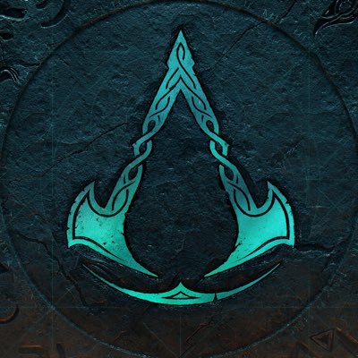

Assassin's Creed LineAge
21/03
Liked by Assasins 1 and 12.000 others
Assassin's Creed: Lineage es una serie de tres cortometrajes de acción en vivo que narran la historia de Giovanni Auditore, padre de Ezio Auditore, protagonista de Assassin's Creed II, Assassin's Creed: Brotherhood y Assassin's Creed: Revelations.